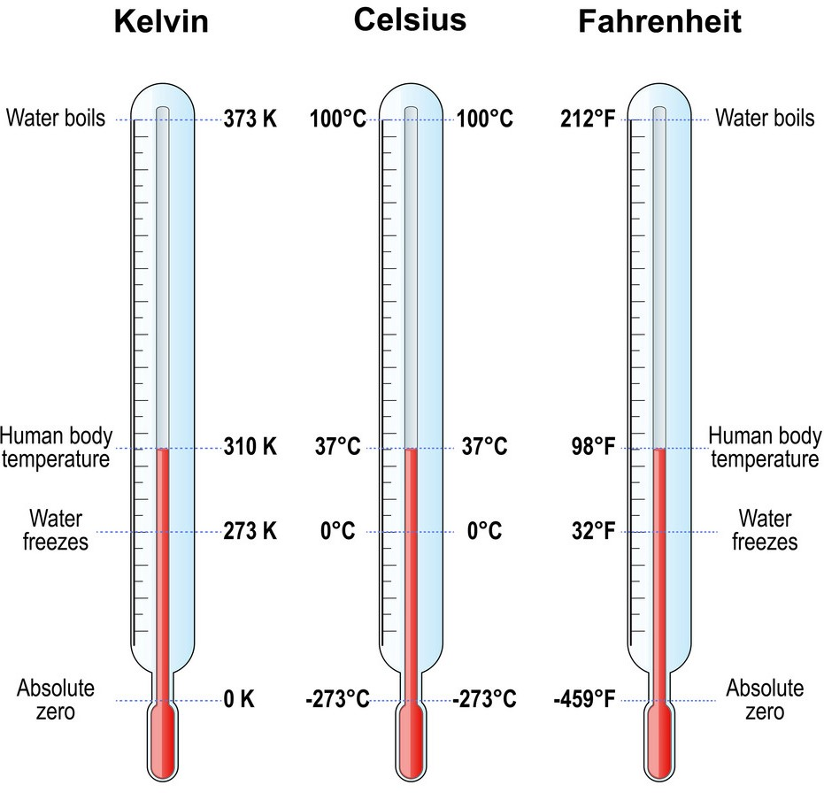

Temperature conversion is a common task in science, engineering, weather forecasting, and everyday life. Different temperature scales are used around the world, and it's essential to understand how to convert between them. Here are five temperature scales and how they relate to each other:
| Temperature Scale | Conversion to Celsius | Conversion to Fahrenheit | Conversion to Kelvin |
| Celsius (°C) | N/A | °F = (°C × 9/5) + 32 | K = °C + 273.15 |
| Fahrenheit (°F) | °C = (°F - 32) × 5/9 | N/A | K = (°F + 459.67) × 5/9 |
| Kelvin (K) | °C = K - 273.15 | °F = (K × 9/5) - 459.67 | N/A |
Here's an explanation of temperature conversion of three temperature scales:
Celsius (°C) :
Celsius is the most widely used temperature scale in the world, especially in scientific contexts and daily life.
The freezing point of water at sea level is defined as 0°C, and the boiling point is defined as 100°C (under standard atmospheric conditions).
Fahrenheit (°F) :
Fahrenheit is primarily used in the United States for weather reporting but can also be found in some other countries.
In the Fahrenheit scale, the freezing point of water is 32°F, and the boiling point is 212°F (under standard atmospheric conditions).
Kelvin (K) :
Kelvin is the standard unit of temperature in the International System of Units (SI).
In the Kelvin scale, absolute zero (the lowest possible temperature) is 0 Kelvin (0K), which is equivalent to -273.15°C.

Temperature boiling state
© 2023 Mizan All rights reserved.